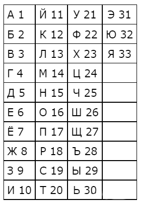
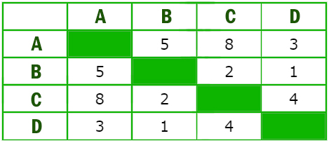
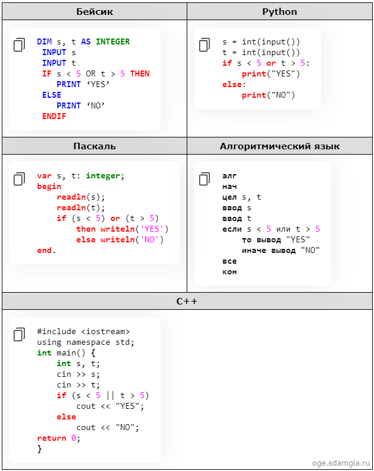

Как устроен ОГЭ по информатике в 2024 году
На экзамен по информатике у каждого ученика 9 класса будет 2 часа 30 минут (150 минут).
За это время он должен будет выполнить 15 заданий: 12 из 1-й части и 3 из 2-й.
Теста, привычного ученикам по другим ОГЭ, в экзамене по информатике
не будет.
Вместо этого в 1-й части нужно будет выполнить задание и записать краткий ответ.
Во 2-й части школьника ждут практические задания. Их нужно будет выполнить на компьютере в специальных программах.
Все задания ОГЭ
по информатике также можно разделить по уровням сложности.
Так, на экзамене ученик столкнётся: с 10 заданиями базового уровня; с 3 заданиями повышенного уровня; с 2 заданиями высокого уровня.
Изменений в структуре экзамена
или КИМах ОГЭ по сравнению с предыдущим годом не будет.
Критерии
| Балл | Оценка |
|---|---|
|
0-4 |
2 |
|
5-10 |
3 |
|
11-15 |
4 |
|
16-19 |
5 |
Перейдем к алгоритму решения задач (задания и обьяснение к ним идут по порядку)
Задание №1
Для решения первого задания необходимо выучить таблицу перевода различных единиц информации.
Достаточно будет запомнить два числа - 8 и 1024 - а далее выучить таблицу будет легко.
Далее рассмотрим пример решения (ниже)
Задача
В кодировке UTF-32 каждый символ кодируется 32 битами. Костя написал текст (в нём нет лишних пробелов):
«Бай, аэта, волоф, кереки, киргизы, норвежцы— народы».
Ученик вычеркнул из списка название одного из народов.
Заодно он
вычеркнул ставшие лишними запятые и пробелы — два пробела не должны идти подряд.
При этом размер нового предложения в данной кодировке оказался на 24 байта меньше, чем размер исходного предложения.
Напишите в ответе вычеркнутое
название народа.
Решение
В первой задаче ОГЭ по информатике 2023 обычно есть текст в кавычках, который написан учеником.
Мы знаем, что в данной задаче каждый символ кодируется 32 битами.
Зная, что в каждом байте 8 битов, переведем биты в байты:
32 : 8 = 4 (байта).
Так как текст по условию уменьшился на 24 байта, найдем на сколько символов уменьшился текст: 24 : 4 = 6 (символов)
Так как по условию ученик вычеркнул вместе со словом запятую и пробел, вычтем 2 символа:
6 - 2 = 4 (символов)
Далее ищем в нашем ряду слово из 4-х символов, тоесть из 4-х букв.
ОТВЕТ: аэта
Рассмотрим другой тип задачи №1
Задача
В кодировке Windows-1251 каждый символ кодируется 8 битами. Вова хотел написать текст (в нём нет лишних пробелов):
«Скользя по утреннему снегу,
Друг милый, предадимся бегу
Нетерпеливого коня
И навестим поля пустые...»
Одно
из слов ученик написал два раза подряд, поставив между одинаковыми словами один пробел.
При этом размер написанного предложения в данной кодировке оказался на 8 байт больше, чем размер нужного предложения.
Напишите в ответе
лишнее слово.
Решение
Здесь аналогично с предыдущим типом переведем биты в байты (по условию символ кодируется 8-ми битами): 8 : 8 = 1 (байт)
Так как текст по условию уменьшился на 8 байт, найдем на сколько символов уменьшился текст: 8 : 1 = 8
(символов)
Потому, что ученик вычеркнул вместо со словом только один пробел, БЕЗ запятой (по условию), вычтем 1 символ: 8 - 1 = 7 (символов)
Также, как и в первом типе, ищем слово из получившегося количества символов, а именно
слово из 7-ми букв
ОТВЕТ: скользя
Задание №2
Все типы задания №2 - это кодировки. Рассмотрим все типы задач (ниже)
Задача
Вася и Петя играли в шпионов и кодировали сообщения собственным шифром. Фрагмент кодовой таблицы приведён ниже:
| К | Л | М | П | О | И |
|---|---|---|---|---|---|
| @+ | ~+ | +@ | @~+ | + | ~ |
Расшифруйте сообщение, если известно, что буквы в нём не повторяются:
+ ~ + ~+@@~ +
Запишите в ответе расшифрованное сообщение.
Решение
Существует два способа решения кодировок: с конца, либо же с начала (кому как подойдет)
Кодировка начинается с символа плюс. Посмотрим в таблицу и увидим,
что буквы "М" и "О" начинаются с +, но в "М" после + стоит символ @, которого
нет в кодировке после +.
Следовательно нам подходит буква "О". Следующий символ: волнистая линия. Это может как буквой "Л", так и буквой "И".
В таких ситуациях мы должны выбрать любой вариант, и попробовать расшифровать дальше.
Если получится, то мы выбрали верный вариант.
Если нет, то необходимо вернуть в ту точку, где сделали выбор, и выбрать второй вариант, который в прошлый раз не выбрали. Здесь выберем букву "Л".
Если в моменте у вас возникли
трудности, можно переключиться на конец кодировки. В конце кодировки символы @ ~ +. К этому подходит только буква "П"
Пока что у нас получается слово ОЛ...М и остаются символы ~ + @, перебирая все варинты, находим единственную
расшифровку "И" "М".
ОТВЕТ: олимп
Рассмотрим другой тип задачи №2
Задача
Ваня шифрует русские слова, записывая вместо каждой буквы её номер в алфавите (без пробелов). Номера букв даны в таблице:

Некоторые шифровки можно расшифровать несколькими способами. Например, 12112 может означать «АБАК», может— «КАК», а может— «АБААБ».
Даны четыре шифровки:
20335
21120
31321
51201
Только одна из них расшифровывается
единственным способом.
Найдите её и расшифруйте. То, что получилось, запишите в качестве ответа.
Решение
Рассмотрим первый код 20335. Двадцать 20 мы может расшифровать только, как букву "Т".
Следующие две тройки 33 можно расшифровать, как две буквы "В" подряд, а можно, как букву "Я".
Значит, этот шифр можно расшифровать разными способами.
Рассмотрим следующий код 21120.
Первое сочетание 21 можно расшифровать, как 2 и 1 - "Б", "A", а можно и как 21 - "У".
Следовательно, данный код можно расшифровать разными способами. Рассмотрим следующий код 31321.
Сочетание
31 можно рассматривать, как 3 и 1, а можно, как 31.
Поэтому шифр не подходит. Остался последний шифр 51201. Убедимся, что данный код нам подходит. 51 - это 5 и 1, т.е. "Д" и "А".
Двадцать 20 - это только буква "Т". Единица
1 - это "A".
ОТВЕТ: дата
Задание №3
В третьем задании представлены логические выражения. В логическом выражении могут использоваться союз И и союз ИЛИ
Задача
Напишите наименьшее число X, для которого истинно высказывание:
(X > 16) И НЕ (X нечётное)
Решение
Получается наш X должен быть больше 16, и число должно быть не нечётное, т.е. чётное!
Наименьшее чётное число большее 16 будет 18
ОТВЕТ: 18
Рассмотрим другие типы задачи №3
Задача
Напишите наибольшее целое число x, для которого истинно высказывание:
НЕ (X <=6 ) И НЕ (X>= 11)
Решение
С одной стороны X должен быть НЕ меньше или равно 6, т.е значит, X нужно взять больше 6 (X > 6).
Причём само число 6 не входит в этот диапазон. С другой стороны X НЕ больше или равно 11,
т.е. X должен быть меньше 11 (X
< 11). Наибольшее целое число - 10
ОТВЕТ: 10
Следующая задача
Задача
Для какого целого числа X ЛОЖНО высказывание:
(X> 3) ИЛИ НЕ (X > 2)
Решение
Утверждение, что X > 3 должно быть ложно, значит, если его перевернуть, получится X
<=3 .
Второе утверждение НЕ (X > 2) тоже должно быть ложно. Значит, если перевернём это утверждение, частицу НЕ нужно убрать.
Получается просто X > 2. Получается, что только одно целое число входит в допустимый диапазон.
ОТВЕТ: 3
И рассмотрим последнюю задачу
Задача
Напишите наименьшее натуральное число x, для которого истинно высказывание:
НЕ((x
<=200) ИЛИ (x
<=100))
Решение
Нам нужно сделать выражение истинным. Но всё выражение находится под влиянием частицы НЕ.
Можно эту частицу полностью убрать, но воспринимать, как будто нужно сделать выражение ложным.
А дальше всё как обычно. Первое
выражение выдаёт ноль, когда x>200 (равно 200 не входит).
Второе выражение выдаёт ноль, когда x>100. Объединив эти два условия получаем:
x > 200
Наименьшее число - 201
ОТВЕТ: 201
Задание №4
В четвертом задании представлена карта городов и дорог между городами. Рассмотрим примеры
Задача
Между населёнными пунктами A, B, C, D построены дороги, протяжённость которых (в километрах) приведена в таблице.

Определите длину кратчайшего пути между пунктами A и C.
Передвигаться можно только по дорогам, протяжённость которых указана в таблице.
Решение
1)Расставим точки, которые символизируют города, примерно по кругу.
2)Проведём дороги между городами так, как указано в таблице.
3)Если на пересечении городов стоит число, значит, мы проводим линию между этими точками.
4)Поставим
числа над каждой дорогой, характеризующие длины каждого отрезка.
5)Теперь найдём самый короткий путь из A в C. Можно сразу попасть из A в C по прямой дороге за 8.
Если пойдём через пункт D, то придём в город C за
7. Через город B так же можно прийти за 7 километров.
Но мы видим, что длина дороги из D в B равна 1. Попытаемся эту дорогу использовать при составлении маршрута.
Получим путь: A-D-B-C. Получается 3+1+2=6. Это и
есть кратчайший путь.
.jpg)
ОТВЕТ: 6
Рассмотрим немного другую задачу №4
Задача
Между населёнными пунктами A, B, C, D, E построены дороги, протяжённость которых (в километрах) приведена в таблице.
.jpg)
Определите длину кратчайшего пути между пунктами A и Е, проходящего через пункт С.
Передвигаться можно только по дорогам, протяжённость которых указана в таблице, два раза посещать один пункт нельзя.
Решение
1)Расставим точки по кругу. Точка С - это обязательный пункт. 2)Теперь можно начать искать кратчайший путь от A до E, проходящего через C.
3)Найдём кратчайший путь до точки С. Это и есть путь A-C. Он равен 5.
4)От С
до E можно добраться разными путями: C-E = 8 либо C-D-E = 2 + 5 = 7 либо C-B-E = 4 + 3 = 7
5)Видим длину BD = 1. Попытаемся использовать эту дорогу!
6) C-D-B-E = 2 + 1 + 3 = 6 Это и есть самый короткий путь.
.jpg)
В конце посчитаем путь и получившееся число запишем в ответ: A-C-D-B-E = 5 + 6 = 11.
ОТВЕТ: 11
Задание №5
В задании представлены простые линейные алгоритмы. Рассмотрим подробнее
Задача
У исполнителя Гамма две команды, которым присвоены номера:
1. прибавь 3;
2. умножь на b
(b — неизвестное натуральное число; b ≥ 2).
Выполняя первую из них, Гамма увеличивает число на экране на 3,
а выполняя вторую, умножает это число на b.
Программа для исполнителя Гамма — это последовательность номеров команд.
Известно, что программа 11121 переводит число 3 в число 75. Определите значение b.
Решение
В условии дана программа с названием из ряда цифр - это и есть последовательность выполнения преобразований числа 3 в число 75
Также в условии сказано что номер 1 прибавляет 3 к нашему числу, а у нас в ряду алгоритма первые
три команды это единицы.
Следовательно прибавляет к числу 3 три раза по 3: 3 + 3 + 3 + 3 = 12.
Дальше у нас осталось две команды до получения числа 75.
Так как мы не знаем число b то начнем с конца, а именно
из 75 вычтем 3
(потому что последняя команда это единица (прибавить 3), а вычитаем из-за обратности действия: 75 - 3 = 72.
Далее у нас получается что из числа 12 командой 2 (умножение на b) у нас получается число
72.
Следовательно делим 72 на 12 так как обратно действие выполяется по условию (т.е. умножжение по условию): 72 : 12 = 6.
Ну и наконец записываем ответ.
ОТВЕТ: 6
Рассмотрим другой тип задачи №5
Задача
У исполнителя Квадратор две команды, которым присвоены номера:
1. прибавь 1
2. возведи в квадрат
Первая из них увеличивает число на экране на 1, вторая возводит его во вторую степень.
Составьте
алгоритм получения из числа 3 числа 84, содержащий не более 5 команд.
В ответе запишите только номера команд.
(Например, 11221 — это алгоритм:
прибавь 1
прибавь 1
возведи в квадрат
возведи в квадрат
прибавь 1,
который преобразует число 1 в 82.)
Если таких алгоритмов более одного, то запишите любой из них.
Решение
В этой задаче сразу начнем с конца составлять алгоритм, напомню, что в результате полученно число 84.
Число 84 не является квадратом какого-либо числа, значит пятая (последняя) команда нашего алгоритма - это прибавить 1.
Вычтем из 84 число 1 чтобы отбросить последнюю команду: 84 - 1 = 83.
Число 83 также не является квадратом, следовательно предпоследняя команда нашего алгоритма - прибавить 1.
Аналогично 83 - 1 = 82. Число 82
опять не является квадратом, и у нас пока что алгоритм ..111 (точки - неизвестные команды).
Опять убираем третью команду обратностью вычисления: 82 - 1 = 81.
Вот тут уже число 81 является квадратом числа 9. Следовательно
алгоритм .2111(точки - неизвестные команды).
Ну и исходное число 3 в квадрате дает наше число 9, поэтому первая команда алгоритма - возвести в квадрат (2).
Записываем в ответ полученный алгоритм.
ОТВЕТ: 22111
Задание №6
В задании 6 мы имеем программы с условными операторами. Программы написаны на 5-ти языках.
Совет: Python (питон) наиболее легкий для понимания, если немного разбираетесь в английском (например "OR" - это ИЛИ,
а не И).
Если же этот варинт вам не подходит, то смотрите через программу, написанную на Алгоритмическом языке.
Задача
Ниже приведена программа, записанная на пяти языках программирования.

Было проведено 9 запусков программы, при которых в качестве значений переменных s и t вводились следующие пары чисел:
(2, 5); (5, 2); (4, 4); (2, –2); (3, 1); (8, 3); (9, –7); (7, 7); (4, 6).
Сколько было запусков, при которых программа напечатала «NO»?
Решение
По условию программа пишет "YES", если переменная s
< 5 ИЛИ t> 5. Во всех остальных случаях программа пишет "NO".
Для начала остановим условия написания программой значения "NO",
а именно заменим знаки обратными: s >= 5 ИЛИ t
<=5 , то есть у переменной S знак "меньше"(<) меняем на знак "больше или равно"(>=),
а у переменной T знак "больше"(>) меняем на знак "меньше или равно"(
<=)
После этого видим четкие условия для NO: s >= 5 И t
<=5
Далее перебираем все варианты проведенных запусков ниже (s,t).
Помним, что для написания программой "NO должны выполняться два наших условия(которые нашли мы),
тогда как при "YES " достаточного одного(которые
даны по условию).
В итоге запуски: (5, 2); (8, 3); (9, –7) нам подходят. Запишем их количество в ответ.
ОТВЕТ: 3
Рассмотрим другой тип задачи №6
Задача
Ниже приведена программа, записанная на пяти языках программирования.
.png)
Было проведено 9 запусков программы, при которых в качестве значений переменных s и t вводились следующие пары чисел:
(13, 2); (11, 12); (–12, 12); (2, –2); (–10, –10); (6, –5); (2, 8); (9, 10); (1, 13).
Укажите наименьшее целое значение параметра A, при котором для указанных входных данных программа напечатает «NO» восемь раз.
Решение
Аналогично с задачей выше, так как у нас в условии программа должна печатать "NO", то меняем знаки у переменных: s
<=A И t <=1 2.
Начинаем перебирать верное выполнение условия с переменной t, из ряда запусков можем исключить запуск (1,13),
так как 13 больше 12(у нас число запуска t
<=1 2). И далее нам нужно подобрать то число А,
при котором программа напечатает "NO" 8 раз, то есть s
<=A 8 раз.
После этого смотрим на оставшееся запуски, а именно на их первые числа(переменные S).
Пока что у нас даны числа: 13, 11, -12, 2, -10, 6, 2, 9.
Их восемь, и это облегчает нам задачу,
иначе нам бы пришлось
подбирать наименьшее число A подстраиваясь под заданной количество раз написания "NO".
Понимаем, что наименьшее число А, при котором S
<=A - это 13.
Записываем ответ.
ОТВЕТ: 13
Задание №7
В заданиях номер 7 нам предстоит составить маршрут адресной строки к какому-либо файлу на сервере. Разберемся по-подробнее.
Задача
Доступ к файлу com.pas, находящемуся на сервере net.ru, осуществляется по протоколу http.
Фрагменты адреса файла закодированы буквами от А до Ж.
Запишите последовательность этих букв, кодирующую
адрес указанного файла в сети Интернет.
А) ://
Б) /
В) .pas
Г) net
Д) .ru
Е) http
Ж) com
Решение
Начнем составлять маршрут к необходимому файлу.
Первым пишется протокол, на котором находится сервер. ( http )
Далее идет двоеточие и два слэша ( :// )
После идет сервер и его родовой домен либо домен страны,
на
котором лежит файл ( net(сервер).ru(домен страны) )
Далее слэш ( / ) и после слэша сам файл с
его расширением ( /com (файл).pas (расширение) ).
Записываем полную адресную строку (rout к файлу).
ОТВЕТ: ЕАГДБЖВ
Рассмотрим еще один пример задачи №7
Задача
Доступ к файлу table.xls, находящемуся на сервере sch.com, осуществляется по протоколу https.
Фрагменты адреса файла закодированы буквами от А до Ж.
Запишите последовательность этих букв, кодирующую адрес указанного
файла в сети Интернет.
А) com
Б) https
В) ://
Г) sch.
Д) .xls
Е) table
Ж) /
Решение
Также как и в примере выше, пишем протокол ( https )
Далее двоеточие и два слэша ( :// ).
Затем сервер и его коммерческий домен ( sch (сервер).com (домен) )
Ставим слэш ( / ) и имя файла с
его расширением (
/table (файл).xls (расширение) ). Записываем ответ.
ОТВЕТ: БВГАЖЕД
Задание №8
Задача
Решение
ОТВЕТ: ЕАГДБЖВ
Рассмотрим еще один пример задачи №8
Задача
Решение
.
ОТВЕТ: